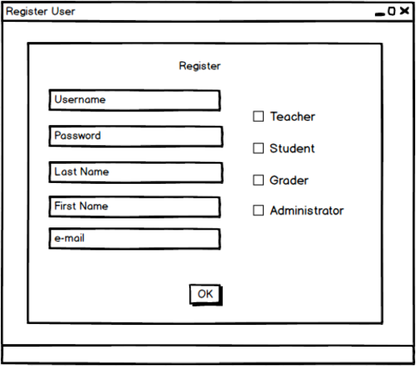

The administrator adds the user and sets different privileges for the user which classifies the user either as a Teacher, Student, Grader or a System administrator.

Figure 1: Teacher Account menus.
The administrator fills in the "Sign Up" form by adding
The administrator clicks on the "Login" button and the system creates a new user in the database.